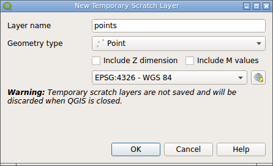

The "New Temporary scratch layer" dialog opened now.
It is time to configure our layer. Enter "points" in the "Layer name" field and select "Point" from the "Geometry type" combobox. Leave all other widgets unchanged.
Press "OK" button to create new layer.